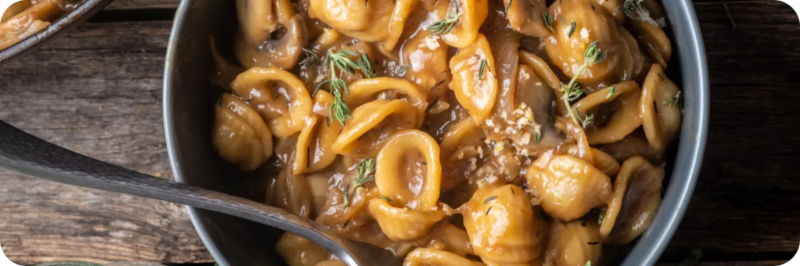

French Onion Pasta!

This One Pot French Onion Pasta is rich and creamy, with sweet caramelized onions, cremini mushrooms and orecchiette. Simple, delicious and easily adaptable for vegan and gluten free.
This pasta is one of the best things I've ever had. It combines my favorite food – pasta – with one of my favorite soups – French onion soup. It takes some extra time to caramelize onions, but the incredibly sweet and robust flavor is definitely worth it!
I love one pot recipes because it simplifies cooking and cuts down on dishes. In addition to everything cooking in one pot, this recipe has very little prep work.
Ingredients
- 2 tbsp Butter
- 1 Large Yellow Onion
- 1/8 cup Sherry
- 1/4 cup White Wine dry
- 5 sprigs Fresh Thyme
- Salt and Pepper to taste
- 8 oz Rigatoni uncooked
- 3 cups Beef Stock or Broth
- 1 tsp Worcestershire Sauce
- 1/4 cup Parmesan Cheese
- 1/4 cup Half and Half
Steps
- Caramelize onions. Stir occasionally.
- Pour in sherry and wine. Deglaze by scraping up the brown bits.
- Add uncooked rigatoni
- Pour in beef broth and Worcestershire Sauce.
- Wait about 15 minutes. Until the pasta is cooked.
- Turn off heat.
- Add in grated cheese and half & half.
- Serve!